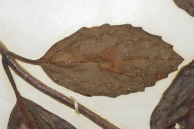
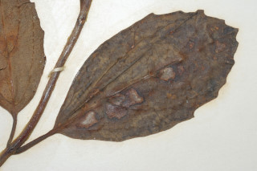
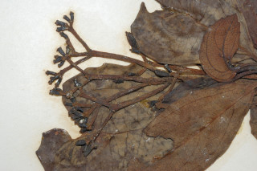
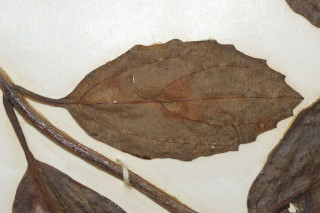
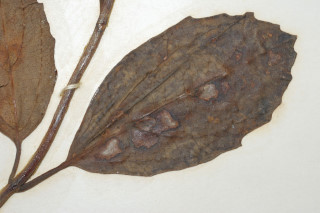
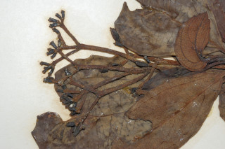

Small trees, up to 6 m tall.
6 ಮೀ. ವರೆಗಿನ ಎತ್ತರಕ್ಕೆ ಬೆಳೆಯುವ ಸಣ್ಣ ಮರಗಳು.
6 മീറ്റര് വരെ ഉയരത്തില് വളരുന്ന ചെറുമരങ്ങള്.
சிறிய மரம் 6 மீ. உயரம் வரை வளரக்கூடியது
Leaves simple, opposite, decussate; stipule caducous; petiole ca. 1.5 cm long, canaliculate; lamina 4.5-7 x 2.4-4 cm, elliptic to ovate, apex acute, base acute to slightly rounded, margin distantly dentate, midrib flat; secondary_nerves 3 pairs, domatia hairy; tertiary_nerves percurrent.
ಎಲೆಗಳು ಸರಳ, ಕತ್ತರಿಯಾಕಾರದ ಅಭಿಮುಖ ಜೋಡನಾ ಮಾದರಿಯಲ್ಲಿದ್ದು; ಕಾವಿನೆಲೆಗಳು ಉದುರಿಹೋಗುತ್ತವೆ; ತೊಟ್ಟುಗಳು ಅಂದಾಜು 1.5 ಸೆ.ಮೀ. ಉದ್ದವಿದ್ದು ಕಾಲುವೆಗೆರೆ ಸಮೇತವಿರುತ್ತದೆ; ಪತ್ರ 4.5 – 7 x 2.4 – 4 ಸೆ.ಮೀ. ಗಾತ್ರ ಅಂಡವೃತ್ತದಿಂದ – ಅಂಡಾಕಾರದವರೆಗಿದ್ದು ಚೂಪಾದ ತುದಿ, ಚೂಪಾದುದರಿಂದ ಸ್ವಲ್ಪ ಮಟ್ಟಿಗೆ
സമ്മുഖ ഡെക്കുസേറ്റ് ക്രമത്തിലുളള ലഘുപത്രങ്ങള്; അനുപര്ണ്ണങ്ങള് കൊഴിഞ്ഞു വീഴുന്നതാണ്; ഇലഞെട്ടിന് 1.5 സെ. മീ നീളം, ചാലോട് കൂടിയതാണ്; പത്രഫലകത്തിന് 4.5 സെ.മീ മുതല് 7 സെ.മീ വരെ നീളവും 2.4 സെ.മീ മുതല് 4 സെ.മീ വരെ വീതിയും, ആകൃതി ദീര്ഘവൃത്താകാരം മുതല്
இலைகள் தனித்தவை, எதிரிலையடுக்கம், குறுக்குமறுக்கமானவை; இலையடிச்செதில் உதிரக்கூடியது; இலைக்காம்பு 1.5 செ.மீ. நீளமானது, கேனாலிகுலேட்; இலை அலகு 4.5 - 7 X 2.4 - 4 செ.மீ., நீள்வட்டம் முதல் முட்டை வடிவம், அலகின் நுனி கூரியது, அலகின் தளம் கூரியது முதல் சிறிதளவு
Inflorescence compound umbel and corymbiform.
ಪುಷ್ಪಮಂಜರಿ ಸಂಯುಕ್ತ ಪೀಠಛತ್ರ ಮಾದರಿಯಲ್ಲಿದ್ದು, ನೀಳಛತ್ರ ರೂಪಿಗಳಾಗಿರುತ್ತವೆ.
പൂങ്കുല, കോറിംബ് രൂപത്തിലുള്ള ബഹുഛത്ര പുഷ്പമഞ്ജരിയാണ്.
மஞ்சரி கூட்டு அம்பல் மற்றும் கோரியம்ப்.
Drupe, ovoid; 1-seeded.
ಡ್ರೂಪುಗಳು ಅಂಡಾಕಾರದಲ್ಲಿದ್ದು ಒಂದು ಬೀಜವನ್ನು ಹೊಂದಿರುತ್ತವೆ.
അണ്ഡാകാര ആഭ്രകം; ഒറ്റവിത്തുമാത്രം.
உள்ளோட்டுத்தசைகனி (ட்ரூப்), முட்டை வடிவம்; ஒரு விதை கொண்டது.
 




